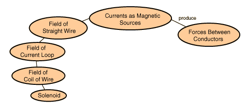

Magnetic Fields from CurrentsMagnetic fields on a macroscopic scale can be related to electric currents. That relationship is made specific in the Biot-Savart Law and can be visualized and calculated with Ampere's Law if the symmetry of the system is high enough to make the use of Ampere's Law practical. 
|
Index Magnetic field concepts Magnetic field geometries | ||
|
Go Back |